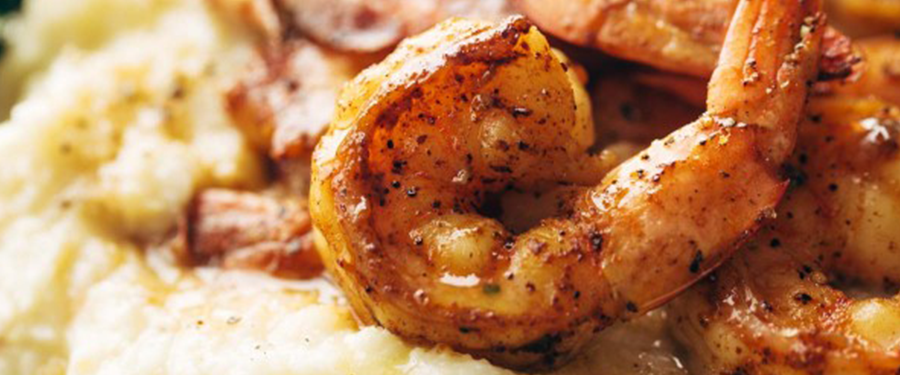
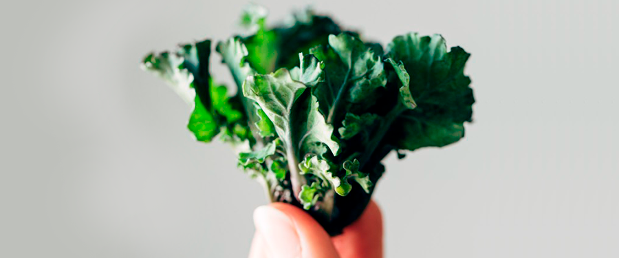
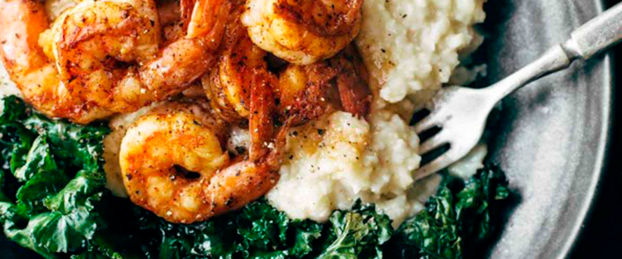

SPICY SHRIMP WITH CAULIFLOWER MASH AND GARLIC KALE
FEBRUARY 22, 2016
SERVES 4 | INGREDIENTS
FOR THE CAULIFLOWER MASH
- 1 TABLESPOON OLIVE OIL
- 1 HEAD CAULIFLOWER, CUT INTO SMALL FLORETS (ABOUT 6 CUPS)
- 3 CLOVES GARLIC, MINCED
- 1 CUP MILK
- 3 CUPS VEGETABLE OR CHICKEN BROTH
- 1 14-OUNCE CAN WHITE BEANS, RINSED AND DRAINED
- 1/2 CUP CORNMEAL
- 1/2 CUP SHREDDED CHEESE, LIKE SHARP CHEDDAR OR HAVARTI
- 1 TEASPOON SALT
FOR THE KALE
- 1 TABLESPOON BACON FAT
- 1 PACKAGE KALETTES, IF YOU CAN FIND THEM! OR 3 CUPS CHOPPED KALE
- 3 CLOVES GARLIC, MINCED
FOR THE SHRIMP
- 1 TABLESPOON OLIVE OIL
- 1 LB. SHRIMP (ENOUGH FOR 4 PEOPLE)
- A FEW GOOD SHAKES OF GARLIC SALT, CHILI POWDER
- CAYENNE, AND/OR BLACK PEPPER
This recipe miracle came to me after almost ten days of straight up ignoring my kitchen. This is how I make the recipe magic happen, see?
Laziness has its perks, in the form of spicy shrimp and cauliflower mash. First I was on vacation, then I was tired, then I wasworking my way through leftovers… no shortage of excuses for why I needed to lay on the couch and absent-minded scroll through Instagram instead of ACTUALLY MAKING FOOD.
But sad day because look what kind of buttery shrimp glory I was missing out on.
When the moment came where the leftovers ran out and the people at the take-and-bake pizza place were starting to wonder and I actually had to start cooking again in order to feed my hungry face, I grabbed the nearest Cooking Light magazine that my mother-in-law had dropped off last week (I am the queen of second-hand food magazines, in case you’re looking to get rid of some) and found this gem of a recipe tucked away in it.
Right when I saw it, I knew –> this one had you and me written alllll over it.
Letz break this down, because when I say smoky garlic kale, what I really mean is KALETTES (!!) sautéed with garlic in a little knoblet of bacon fat.
That adorable thing would be called a kalette: a cross between kale and brussels sprouts.
I bought mine at Super Target, so it would appear that we regulars have access to these little wonders without a trip to any special grocery store. WINNING.
Related – that knob of bacon fat that I mentioned? The one that makes these kalettes especially delicious? It’s something you should just do, like, regularly. I keep a little container in my fridge – it’s called the Fat Trapper, I’m sorry to say – for bacon grease so that I can always add a little depth and smoky-rich flavor to any dish by swapping my butter or oil with a little bacon fat. This is one of my favorite easy little cooking hacks. Every time I do this, people go above and beyond in their food compliments. Because true story -> people love bacon fat.
While we’re eating shrimp and cauliflower mash and feeling the good feelings and such, I have a few things I’ve been wanting to tell you ranging from really superficial to semi-serious.
FIRST: We got rid of our TV this week. You know, just during an impromptu 10pm rearranging of the living room. I don’t know, I just felt like I should tell you since we talk about TV together sometimes. I’m a little sad, but 90% okay with it. We weren’t watching intentional TV much lately – there was a lot of aimless YouTubing and random Let’s Just Watch Whatever’s On kind of stuff happening – and our TV was literally sized for a giant, so clearly the living room is breathing a sigh of spacious relief now that that’s outta the way. BTW. If you know someone who needs a very large TV…
SECONDLY: The Big Thing. This week we are headed back to the second home of our hearts, the Philippines. This means a lot of things, including but not limited to – a little bit of pre-trip anxiety for me, a long long lonnnng flight, ten precious days visiting the shelter where we worked and lived three years ago, seeing some of my old students, meeting some of the new kids, working on media projects for the orphanage, being a little disconnected on the office-and-email side of things, but live blogging the experiences we are having in order to bring you right along into the heat and the messy and the love. Live blogging just feels like such a term from 2001, doesn’t it?
Seriously, though, my greatest hope for this trip (other than doing these media projects for the shelter and visiting the kids) is that I can share a sliver of this place with you, my readers, especially those of you who have been with us since back when we were living in the Philippines. I’ve dedicated a whole week on my editorial calendar (fancyyy) to just sharing pictures and stories and virtually bringing you there with me.
And TBH, I’m feeling a little insecure about it. Because food posts are so much safer. Food posts are what this blog is built on, and they are comfortable, and they are what I know how to do. Writing about an experience abroad (especially in a serious way) gets a little more complicated and vulnerable and I’ll probably make mistakes and say things that I’m embarrassed to read 5 years from now. But at the same time, I also know that THIS IS A STORY I HAVE TO TELL. It’s too incredible on a deep, must-tell level. Plus, you are real people with awesomely big hearts and that, because of you and your awesomely big hearts, Pinch of Yum doesn’t have to be boxed in by food posts, right? We can GO THERE. I owe you so much for that.
So that’s exactly what we’re going to do – go there together. I have this vision of packing up my computer, and with it, packing up all of your kind faces, and re-opening my computer in Cebu to see all of you smiling back at me, waiting to experience this little corner of the literal world and to be changed from right where you are.
While eating spicy shrimp and cauliflower mash and garlic kalettes.
Here we go, team! Here we go.
INSTRUCTIONS
1
2
3
For the cauliflower: Heat the olive oil in a large soup pot. Add the cauliflower and garlic. Saute for a minute or two, until the garlic is really fragrant. Add the milk and 2 cups broth. Simmer for 10 minutes or until soft. Add the while beans and mash roughly with the back of a large wooden spoon - I loved the rustic, chunky texture of this. Stir in the cornmeal and things will start to thicken a bit. Adjust the consistency by adding in the last cup of broth as needed. Stir in the salt and cheese and
season to taste.
For the kale: Heat the bacon fat in a nonstick skillet over medium low heat. Add the greens and garlic and saute until softened. For the kalettes, I added a little water at the end to sort of steam them to finish them off. Remove kale and wipe out pan with a paper towel.
For the shrimp: In the same skillet, add the oil over medium heat. Pat the shrimp dry. Add to the pan and sprinkle with seasonings to taste. Cook for just a few minutes and then add a quick splash of water or broth to the pan (about 2 tablespoons) to pull the browned bits and spices into something of a saucy-coating for the shrimp. It's delicious.
Serve the shrimp and kale over a big pile of cauliflower mash! SO yummy.
NOTE:
THIS POST CONTAINS AN AFFILIATE LINK FOR THE NIFTY LITTLE BACON FAT TRAPPER (LINK)!
AND WHAT'S PROBABLY MY BEST BLOG LINE EVER